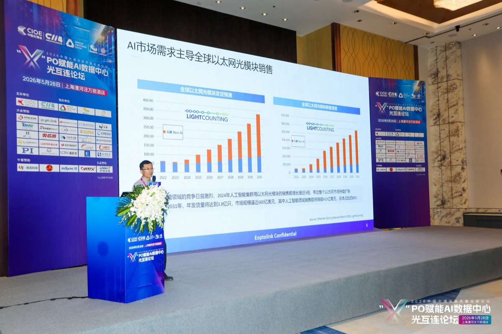

上周我去了一场关于光互联的论坛。出来的时候，脑子里只剩一个念头： 大家都在抢着谈 GPU、谈大模型，可几乎没人认真聊聊——这些芯片到底是怎么连起来的。 而我越来越觉得，答案就藏在这个被忽略的问题里。
这篇不算严格的会议纪要，更像是我边听边记、回来又琢磨了几天之后的整理。 数据和图表都来自现场的演讲（LightCounting、阿里云、百度、中国移动、信通院，还有长光华芯、是德科技这些厂商）， 但观点是我自己的。先说句免责：下面这些不构成任何投资建议，我也会犯错。
先说我最大的一个感受
这两年，所有的聚光灯都打在算力本身上：更强的卡、更大的模型、更高的参数量。 但有一件事被反复忽略——一颗芯片再快，也得跟成千上万颗别的芯片协同工作。 这时候决定整体性能的，往往不是单卡多猛，而是卡和卡之间的数据能多快地流动。
论坛上百度的演讲者给了它一个很形象的名字：Communication Wall（通信墙）。 意思是，算力瓶颈已经从"芯片内部"转移到了"芯片之间"。光互联不再是锦上添花的性能优化， 而是 AI 集群能不能正常跑起来的刚需。这一句，基本就是我这趟最大的收获。

算力是肌肉，互联是血管。血管不通，肌肉再大也使不上劲。
需求侧的数字，确实有点吓人
我一直对"风口"这个词比较警惕，但有些数字摆在面前，还是很难无视。 LightCounting 给的一组预测是这样的：2026 年四大云商（亚马逊、谷歌、微软、Meta）的 AI 资本开支 加起来 $7250 亿，同比 +77%——注意，是增速还在加速，不是放缓。 谷歌那一家几乎翻倍。

如果嫌上面这张图信息太密，我把几个我觉得最该记住的数挑出来：
| 指标 | 2025 | 2031 预测 |
|---|---|---|
| 全球光器件市场规模 | 约 $180 亿 | $630—1260 亿（3.5–7 倍） |
| 400G+ 光模块年出货量 | 超 6000 万只 | 1.8 亿只 |
| AI 光模块占比 | 已经主导 | >80% |
换句话说，未来五六年，连接 AI 芯片的这些"小东西"，市场可能要翻好几倍。 而且需求的可见度很长——云厂商的订单已经排到了 2027 年。

真正有意思的，是路线之争
数字之外，论坛上吵得最凶、也最让我觉得"水还很深"的，是技术路线。 简单说，光模块正在从"分离"走向"集成"，方向没人有异议；但具体怎么走、谁先走通，分歧很大。 现场出现频率最高的就是三个缩写：NPO、CPO、XPO。

我尽量用大白话解释一下这几条路：
- LPO / NPO——把光引擎往交换芯片旁边挪一挪，省电、好量产。现在就能落地的方案。
- CPO（共封装）——干脆把光引擎和芯片封装在一起，密度最高、最省电，但也最难做，维修都没法换。公认的"技术终态"，可惜量产一推再推。
- XPO——一种液冷可插拔的折中路线，还在搞标准。
如果让我用一句话总结这场争论：NPO 是"现在最现实的选择"，CPO 是"未来一定会到、但还没到的答案"。 阿里云的架构师陈钦说得挺到位——
Scale-Out 坚守可插拔生态；Scale-Up 转向近封装/共封装，NPO 是当前规模化的最优解，CPO 锚定长期方向。
—— 阿里云光网络架构师 陈钦 · 论坛现场
下面这张三条路线的对比，我觉得是全场信息密度最高的一张，贴出来给你参考：

| 维度 | NPO | CPO |
|---|---|---|
| 成熟度 | ✅ 最成熟，最快量产 | 还没到批量部署条件 |
| 可维护性 | 能换，但不能现场换 | ❌ 不可更换 |
| 密度 | 够用 | ✅ 最高 |
| 生态 | ✅ 开放 | ❌ 封闭、绑厂商 |
顺带一提，让我有点意外的是：在这件事上，中国其实已经站到了牌桌中间。 信通院联合华为、腾讯、中国移动，在 5 月 21 日向 OIF 提交了 12.8T 共封装模块的国际标准草案， 还通过了审议。标准话语权这东西，平时看不见，真到了关键时刻就是隐性的护城河。
如果要排一张"时间表"
我个人不太信精确到月的预测，但论坛上拼出来的这条时间线，对判断节奏还是有用的。 我把它简化成几个关键节点：
| 时间 | 会发生什么 |
|---|---|
| 2025 年底 | 阿里云已点亮全球首个 OIF 标准 3.2T NPO 系统（验证完成） |
| 2026 年底 | ⭐ 3.2T NPO 小批量商用启动——这是我最关注的节点 |
| 2027 年 | NPO 规模化；6.4T 首批商用；CPO 良率冲刺 |
| 2028 年+ | 空芯光纤可能进集群；下一代技术冒头 |
一句话：2026 年底到 2027 年，是 NPO 从"验证"走向"出货"的兑现期。 如果要找一个最清晰的催化剂，就是它。
几个我特别想多看一眼的环节
论坛把产业链拆成了七八个赛道挨个评级。我不打算把评分表整张搬过来（那太像研报了）， 只挑几个让我"眼睛一亮"的，说说为什么。
硅光：所有路线的共同地基
最打动我的一点是：无论你押 NPO、CPO 还是 XPO，底下都是硅光（Silicon Photonics）。 需求侧的百度、阿里云，和供给侧的长光华芯、CUMEC，居然不约而同强调了这句话。 当买家和卖家在同一件事上达成共识，这种信号通常很值钱。国产化率现在还不到 10%，空间不用多说。

FAU：典型的"卖铲子"生意
这个我之前几乎没注意过。FAU（光纤阵列单元）是光路进出封装的"物理门户"， 说白了——不管哪条技术路线赢，都得用它。这就是经典的卖水/卖铲子逻辑。 逻云光现场展示的 2D FAU，3600 根光纤塞进 24×24×4mm，全场都在拍照。 全球能量产 2D FAU 的厂商不到 5 家，稀缺性摆在那。

空芯光纤：还早，但拐点在靠近
这个偏远期，我把它归到"值得盯着、但别急"那一类。中国移动王东披露的几个数字挺震撼的： 两年里单价掉了 500 多倍，单次拉丝长度从不到 1 公里做到了 90 公里，损耗压到 0.1 dB/km 以下。 它传得更快、损耗更低、非线性几乎可以忽略。商业化拐点，看起来真的在靠近了。

还有一个常被忘记的：测试
速率每升一代（400G→800G→1.6T），测试的难度和成本就翻一倍，而且这步省不掉。 这是刚需里的刚需。只是高端测试仪器现在还牢牢攥在是德、Viavi 这些手里，国产替代率不到 5%—— 缺口大，机会也大。

最后，几句提醒自己的话
写到这儿，我得给前面的乐观泼点冷水。趋势是确定的，但路径不是，下面几个坑我会一直记着：
- "做 AI 光模块" ≠ "做光模块"。传统模块厂如果不升级到光引擎能力，毛利会被慢慢磨掉。
- 小心 CPO 概念炒作。它 2027 年前很难真兑现，纯概念的高估值要警惕。
- 看清单一大客户依赖。某一家客户占比超过一半的供应商，议价权其实很脆弱。
所以我的态度大概是这样：对方向乐观，对具体赢家谦卑。 这恰恰是它有意思的地方——确定的趋势，不确定的路径。这种时候，与其赌谁是冠军， 不如先理解整张牌桌。
论坛结束时，CIOE 的杨耕硕在致辞里说了一句话，我抄了下来，作为这篇的结尾挺合适：
光互连已经从一项支撑性技术，变成了决定算力效能、功耗与成本的核心瓶颈。
—— CIOE 副主席兼秘书长 杨耕硕 · 开幕致辞